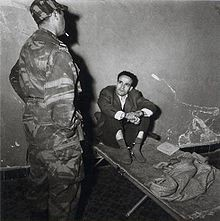

Mohamed Larbi Ben M'hidi, né en 1923 à Aïn M'lila dans l'actuelle wilaya d'Oum El Bouaghi et mort assassiné en 1957 à Alger, est un militant nationaliste algérien, membre du PPA, puis du MTLD, un des fondateurs du FLN en 1954, puis combattant pendant la guerre d'Algérie (1954-1962). Arrêté en février 1957, il est torturé, puis exécuté sans jugement par l'armée française durant la bataille d’Alger.
Il est considéré comme un héros de la révolution en Algérie et son nom a été attribué à plusieurs lieux et édifices institutionnels.
Cadet d'une famille rurale aisée de trois filles et deux garçons, il naît dans le village d'El Kouahi à Aïn M'lila (40 km au sud de Constantine). Après une année à l'école primaire française, il part pour Batna où il obtient son certificat d’études primaires, puis commence des études secondaires à Biskra. En 1939, il s'engage dans les rangs des Scouts musulmans algériens ; au bout de quelques mois, il devient chef de groupe scout.
2.2.Engagement politique
« Groupe des six », chefs du FLN. Photo prise juste avant le déclenchement de la révolution du 1er novembre 1954
2.2.1.Le MTLD
Ben M'hidi travaille ensuite comme comptable au service du Génie civil de Biskra pendant quelques mois, puis s'installe à Constantine et devient un militant très actif du Parti du peuple algérien (PPA). Ben M'hidi adhère au mouvement des Amis du manifeste et de la liberté (AML) fondé par Ferhat Abbas et participe au congrès de mars 1945.
Il est arrêté après les massacres du 8 mai 1945. Le PPA étant devenu clandestin après 1945, il adhère au Mouvement pour le triomphe des libertés démocratiques (MTLD) et devient cadre de l'Organisation spéciale (OS). Lors du démantèlement de cette structure en 1950, il est de nouveau recherché et condamné par défaut à dix ans de prison pour « menées subversives et activité illégale ».
2.2.2.Le FLN
En avril 1954, Ben M'hidi est l'un des neuf fondateurs du Comité révolutionnaire d'unité et d'action qui le 10 octobre 1954 transforment le CRUA en FLN et décident de la date du 1er novembre 1954 comme date du déclenchement de la lutte armée pour l'indépendance algérienne lors de la réunion du 25 juillet 1954 dans une modeste villa du Clos Salambier appartenant à Lyès Deriche. On lui confie la direction de l'Oranie (wilaya V à partir de 1956) qui est sa première responsabilité ; il l'organise efficacement malgré les difficultés.
En 1956, laissant le commandement de la wilaya V à son lieutenant Abdelhafid Boussouf, il devient membre du Conseil national de la révolution algérienne ; il est proche des idées d'Abane Ramdane et de Krim Belkacem.
2.2.3.La bataille d'Alger et la mort
Nommé à la tête de la zone autonome d'Alger, il participe à l'organisation des premiers attentats dans la capitale (notamment ceux du 30 septembre 1956). En janvier, le gouverneur général Robert Lacoste lance la bataille d'Alger, confiant aux parachutistes du général Massu les pouvoirs de police dans la Zone Alger-Sahel.
Larbi Ben M'hidi est arrêté le 23 février 1957 par les parachutistes (la direction de la ZAA passe alors à son adjoint Yacef Saâdi, responsable militaire) ; refusant de parler sous la torture, il est tué par un groupe de soldats français aux ordres du futur général Paul Aussaresses, dans la nuit du 3 au 4 mars 1957.

« Groupe des six », chefs du FLN. Photo prise juste avant le déclenchement de la révolution du 1er novembre 1954
Héros national en Algérie, il est enterré dans le « carré des martyrs » du cimetière d'El Alia, à Alger.
En son honneur, Marsa Ben M'Hidi, une commune de la wilaya de Tlemcen, porte son nom. Il en de même de l'ex-village Morris, maintenant sous préfecture dans la Wilaya d'El Tarf, qui porte le nom Ben M'hidi.
À l'instar de la rue Larbi Ben M’Hidi, une importante artère d'Alger (ancienne rue d'Isly), chaque ville d'Algérie a une rue portant son nom, ainsi que différents établissements scolaires à travers le pays, l’université d'Oum El Bouaghi, et des plages de la ville de Skikda (anciennement plages Jeanne d'Arc).